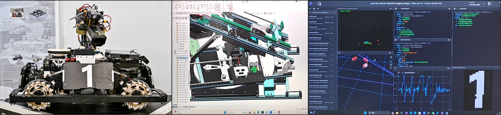

精选项目
Selected Projects
项目覆盖具身智能、机器人系统与面向真实用户的 AI 产品。重点不是孤立的模型演示，而是从需求、原型、系统集成到可用交付的完整过程。
These projects span embodied AI, robotics systems, and user-facing AI products, with an emphasis on end-to-end delivery from requirements and prototypes to integrated, usable systems.
FundaNotes 饭答
面向留学生与中外合办学生，将课件解析、OCR、实时同传、上下文问答、智能笔记、思维导图与针对性练习组织成一条完整学习流程。
An end-to-end learning workflow for international students, combining courseware parsing, OCR, live interpretation, contextual Q&A, smart notes, mind maps, and targeted exercises.
RoboMaster 实验室与竞赛机器人（Navigator）
RoboMaster Lab & Competition Robots (Navigator)
本科期间在 AIRH 支持下从零创立 Navigator Robotics Lab（约 35 人；战队早期名「烧仙草」），组织机械、电控与算法成员协作完成 RoboMaster 竞赛机器人交付。
主导团队首台哨兵机器人的机械结构设计，完成关键部件建模、装配验证与选材，并负责真机装配、维护和比赛现场调试。团队获 RoboMaster 高校联盟赛工程挑战赛辽宁站第一名，并于 2024 年广东站 3V3 与步兵对抗赛获得团队二等奖。
Founded the approximately 35-member Navigator Robotics Lab (formerly Shao Xian Cao) from the ground up with support from AIRH, coordinating mechanical, electrical, and software members to deliver RoboMaster competition robots.
Led mechanical design for the team's first sentry robot, including component modeling, assembly validation, material selection, robot assembly, maintenance, and competition-side debugging. The team won First Place at the Liaoning Regional and team second prizes in the 2024 Guangdong 3v3 and Infantry Challenges.
AIRH projectsAIRH achievements2023 Guangdong award reportLiaoning championship2024 Guangdong resultsannual showcase
